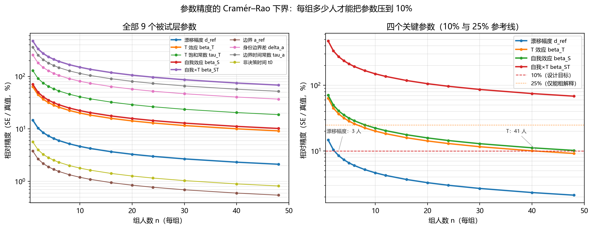
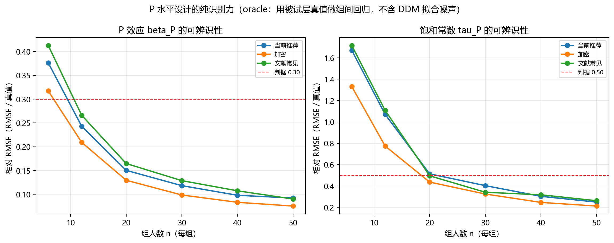
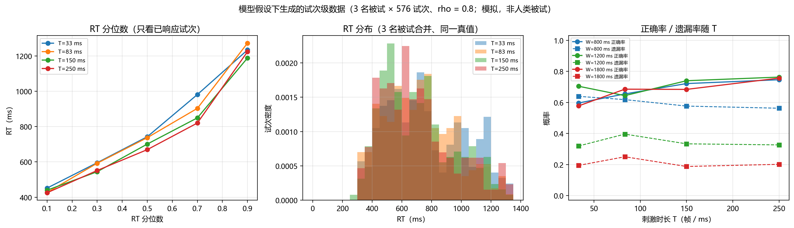
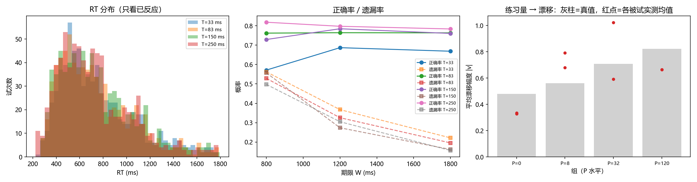

2026-10-21 ｜ pipeline-v1.13 ｜ 全部数字可复现（脚本见 §10）
这是什么：把整个毕业设计（问题 → 设计 → 模型 → 可辨识性 → 分析计划 → 进度）压成一页能读懂的文档。
给谁看：导师、答辩委员、以及两个月后的你自己。
口径：所有"模拟/解析"结论都标了口径；所有"待数据"的地方都标了【待数据】。
更新：2026-10-21 ｜ 对应标签pipeline-v1.13
| 项 | 内容 |
|---|---|
| 研究问题 | 自我相关刺激是否让人更快更准？这种优势是"证据积累变快"还是"反应更急"？练习与呈现时长如何调制它？ |
| 核心方法 | 两阶段漂移扩散模型（M-T1）拟合逐试次选择与 RT；掩蔽后证据保留率 ρ 是关键机制参数 |
| 设计 | 4 组（练习量 P = 0/8/32/120）× 4 呈现时长 × 3 期限 × 自我/他人 × 匹配/不匹配 × 12 重复 = 576 试次/人 |
| 主检验 | β_P（练习 → 漂移，组间）、β_T（呈现时长 → 漂移，被试内） |
| 样本量 | β_T 是硬约束：37–43 人/组达 10% 精度；实际可能只有 10–15 人/组 ⇒ 报区间不报"达标" |
| 已知不可估 | τ_P（练习饱和）、β_ST（自我×时长）、Δa/τ_a（期限→边界）—— 已定量说明原因 |
| 当前阶段 | 模型与方法章已写完（只剩数据占位符）；流水线在合成数据上跑通；等真实数据 |
d 变大）、反应阈值（a 变小，即更急）还是非决策时间（t0 变短）？P 与刺激呈现时长 T 如何改变上述机制？掩蔽出现后证据是否继续积累（ρ）？| 假设 | 内容 | 判定 |
|---|---|---|
| H1 | 自我刺激的漂移更大（β_S > 0） | β_S 的 95% 区间不含 0；同时报 a、t0 的对比（排除"只是更急"） |
| H2 | 练习提高漂移（β_P > 0） | 组间回归 β_P 的区间不含 0，并报效应量 |
| H3 | 呈现越久漂移越大（β_T > 0） | 被试内 β_T 的区间不含 0 |
| H4 | 掩蔽后证据未完全消失（ρ > 0） | ρ 的区间不含 0，且 ρ ≠ 1（ΔBIC、ΔELPD 同向） |
写作纪律：H1–H4 都用区间表述，不用"显著/不显著"作结论。样本量不足时明确写"本研究的区间宽度为 ±X，因此只能排除大于 Y 的效应"。
| 因素 | 水平 | 被试内/间 |
|---|---|---|
练习量 P | 0 / 8 / 32 / 120 次 | 间（4 组） |
刺激呈现时长 T | 33.3 / 83.3 / 150 / 250 ms | 内 |
反应期限 W | 800 / 1200 / 1800 ms | 内 |
| 身份 | 自我 / 他人 | 内 |
| 匹配性 | 匹配 / 不匹配 | 内 |
| 重复 | 12 次/单元 | — |
groupID … stimulus_frames），因此模拟数据可以直接走真实数据的流水线。任务层 P, T, W, 身份, 匹配 │ 映射方程（§3.3） 被试层 v(漂移) · a(边界) · z(起点) · t0(非决策时间) · ρ(掩蔽后保留率) │ 群体分布 mu ± sigma 组层 βP(练习) · τP(练习饱和) · βS(自我)
漂移在刺激呈现期内为 d，掩蔽出现后（t > T）降为 ρ·d：
ρ ∈ [0, 3]：掩蔽后证据保留率。ρ = 0 = 掩蔽后停止积累；ρ = 1 = 掩蔽无影响（退化为单阶段模型 M-T3）；ρ > 1 = 掩蔽后加速。RT < T 的试次，M-T1 下整个积累都在刺激期内 ⇒ RT 分布与 T 无关；M-T3 下这些快反应也会随 T 变。这是设置 4 个 T 水平的真正理由。P_ref = 120（最高练习组）、T_ref = 100 ms、W_ref = 1200 ms。ΔQ_T = T − T_ref），生成用指数形式；两者通过设计层行为最小二乘对齐（最大残差 0.045）。被试层（每人一套）
| 参数 | 含义 | 能否估计 |
|---|---|---|
d_ref | 参考条件的漂移 | ✅ |
β_T | 呈现时长 → 漂移 | ✅（主效应） |
τ_T | 时长饱和常数 | ⚠️ 弱 |
β_S | 自我加性偏移 | ⚠️ 弱 |
β_ST | 自我 × 时长 | ❌ 不可估 |
a_ref | 参考期限的边界 | ✅ |
Δa / τ_a | 期限 → 边界 | ❌ 不可估 |
t0 | 非决策时间 | ✅ |
ρ | 掩蔽后保留率 | ✅（M-T1 特有） |
组层：β_P（练习效应，两步法组间回归）、τ_P（练习饱和）、β_SP（练习×身份）；mu/sigma（群体均值与个体差异 SD）。
| 生成物 | 说明 |
|---|---|
v, a, z, t0 | 每试次的机制参数（真值，可用于恢复检验） |
RT | 首次通过时间 + t0 |
Response | 上/下侧（含正确与否） |
timeout / omission | 超过期限未反应 |
stimulus_frames / stimulus_dur_actual | 呈现帧数与实际时长（质控） |
| 派生量 | 正确率、遗漏率、RT 分位数、刺激内反应比例 |
实际生成的数据（S3 notebook，8 名被试 × 576 试次）：
P | T=33 ms 正确率 | T=250 ms 正确率 | 遗漏率（W=800→1800） |
|---|---|---|---|
| 0 | 0.589 | 0.682 | 0.36 → 0.31 |
| 8 | 0.665 | 0.834 | 0.39 → 0.29 |
| 32 | 0.722 | 0.856 | 0.38 → 0.33 |
| 120 | 0.633 | 0.820 | 0.41 → 0.33 |
（每格 288 试次；含个体差异，故 P=120 组不一定最高——2 人/组的抽样波动。）
4T×3W r12）| 参数 | 真值 | 单被试 SE | 到 10% 需 N | 到 25% 需 N | 判定 |
|---|---|---|---|---|---|
d_ref | 0.70 | 0.103 | 3 | 1 | ✅ |
β_T | 0.55 | 0.350 | 41 | 7 | ✅ 主效应 |
τ_T | 0.08 | 0.104 | 169 | 27 | ⚠️ |
β_S | 0.16 | 0.113 | 51 | 9 | ⚠️ |
β_ST | 0.10 | 0.474 | 2248 | 360 | ❌ |
a_ref | 2.00 | 0.076 | 1 | 1 | ✅ |
Δa | 0.55 | 1.410 | 658 | 106 | ❌ |
τ_a | 0.70 | 2.530 | 1307 | 209 | ❌ |
t0 | 0.22 | 0.012 | 1 | 1 | ✅ |
| 每组人数 | β_P 相对 RMSE（判据 ≤0.30） | τ_P 相对 RMSE（判据 ≤0.50） |
|---|---|---|
| 6 | 0.377 ❌ | 1.667 ❌ |
| 12 | 0.243 ✅ | 1.080 ❌ |
| 20 | 0.150 ✅ | 0.513 ❌ |
| 30 | 0.118 ✅ | 0.329 ✅ |
| 40 | 0.098 ✅ | 0.303 ✅ |
0/8/32/120）| 每组人数 | β_T 相对精度 | β_P 相对精度 | β_P 95% 区间半宽 |
|---|---|---|---|
| 10 | ±21%（折算后 ±30%） | ±17% | ±0.49 |
| 12 | ±19%（折算后 ±28%） | ±15% | ±0.44 |
| 15 | ±17%（折算后 ±25%） | ±14% | ±0.40 |
β_T 是唯一硬约束（被试内漂移敏感度，靠人数平均）；β_P 在 P=32 与 P=120 的漂移差约 0.49，信噪比高。τ_P 不可估，原因是模型口径：漂移幅度取 max(·, 0)，P=0/8 的漂移被截到 0，只有 {32, 120} 两个水平与组层模型自洽，两点定不出曲线的饱和常数。β_ST 需要 2248 人/组：任何"自我优势随时长变化"的说法都必须来自新设计。



S3 notebook 的自检图（8 名被试 × 576 试次，含个体差异）| 步 | 做什么 | 工具/产物 | 闸门 |
|---|---|---|---|
| 1 | 导检与质控（帧数、时长、早期按键、遗漏） | run_pipeline.py 第 1–2 步 | 帧偏差 > 2 帧 ⇒ 该场作废 |
| 2 | 整表与描述统计 | 第 3 步 | 单元缺失 > 5% ⇒ 报出并说明 |
| 3 | 层级拟合（拉普拉斯 + EM） | stage8_run.py | k_max、p_loo/n_obs 正常 |
| 4 | 组间回归（β_P） | recover_group.fit_between | 只用自洽水平 {32,120} |
| 5 | 模型比较（M-T1 vs M-T3） | ρ、ΔBIC、ΔELPD | LOO 闸门未过时 ΔELPD 只作流程验证 |
| 6 | 后验预测检验 | RT 分位数、正确率、遗漏率 | 系统性偏差 ⇒ 回查映射 |
| 7 | 效应量报告 | 区间 + 标准化效应量 | 不用"显著/不显著" |
否决层（任一环不过，则后面的数字全部作废）：
测量可信 → 可计算 → 可辨识 → 设计可承载
加权层（互不替代，只能综合判断）：
可区分 → 可复现 → 可检验 → 可解释
三条纪律：
| 模块 | 产物 | 状态 |
|---|---|---|
| 设计定稿 | 正式采集_候选设计_v2_定稿.md | ✅ |
| 模型章 | 论文_模型章_模板.md（249 行） | ✅ 只剩 10 个占位符 |
| 结果章骨架 | 论文_结果章_模板.md + manuscript.py | ✅ 自动填表 |
| 可辨识性 | Stage4_识别性结论与设计处方.md + figures_sim/sim_crlb.csv | ✅ |
| 设计空间 | Stage9_设计空间优化与论文整合方案.md §13 | ✅ |
| 论文级图 | fig_sim_crlb.png / fig_sim_p_design.png / fig_sim_trials.png | ✅ |
| 模拟数据（试次级） | S3_两阶段DDM_模拟数据生成.ipynb + 4 份 CSV | ✅ 可一键重跑 |
| 流水线 | run_pipeline.py（5 步） | ✅ 合成数据跑通 |
| 层级建模 | stage8_run.py / stage8_health.py | ✅ N=8 可行，N=4 不可辨识 |
| 写作纪律 | D104 证据阶梯 | ✅ |
| 风险 | 影响 | 对策 |
|---|---|---|
| 每组只有 10–15 人 | β_P/β_T 区间变宽 | 报区间；主结论用方向一致的多指标 |
| 上层只有 30–40 人总量 | 组层 sigma 不稳 | 收缩估计 + 敏感性分析 |
| 帧偏差/掉帧 | 呈现时长不可信 | 质控闸门（>2 帧作废） |
| 掩蔽后仍有按键 | ρ 估计偏 | 记录刺激期按键，作为协变量 |
| 交稿时间紧（2026-02-21） | 写作压缩 | 模型章/方法章已提前写完 |
| 章 | 内容 | 状态 |
|---|---|---|
| 第一章 引言 | 自我优势、DDM、练习效应 | 骨架可写 |
| 第二章 方法 | 被试、任务、材料、流程 | 大部分可写（样本量待填） |
| 第三章 计算模型 | §3 全文 | ✅ 已写完 |
| 第四章 结果 | 描述统计、模型比较、参数估计 | 【待数据】骨架已就位 |
| 第五章 讨论 | 机制解释、限制 | 部分可写（限制已定稿） |
# 生成模拟数据（约 1 分钟） jupyter lab "1_Code/Python_for_Generate/S3_两阶段DDM_模拟数据生成.ipynb" # 或直接跑等价脚本 python -X utf8 1_Code/DDM_Core/_scratch/_run_s3_notebook_cells.py # 出三张论文级图（约 2 分钟） python -X utf8 1_Code/Experiment/make_sim_figures.py # 设计空间搜索 python -X utf8 1_Code/Experiment/design_search.py --quick --group-truth oracle